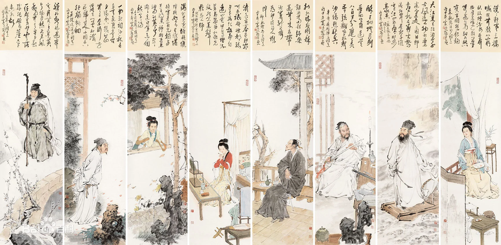

<!DOCTYPE html>


<html lang="en">
  

    <head>
      <meta charset="utf-8" />
        
      <meta
        name="viewport"
        content="width=device-width, initial-scale=1, maximum-scale=1"
      />
      <title>宋词 |  邢景龙的博客</title>
  <meta name="generator" content="hexo-theme-ayer">
      
      <link rel="shortcut icon" href="/favicon.ico" />
       
<link rel="stylesheet" href="/dist/main.css">

      
<link rel="stylesheet" href="/css/fonts/remixicon.css">

      
<link rel="stylesheet" href="/css/custom.css">
 
      <script src="https://cdn.staticfile.org/pace/1.2.4/pace.min.js"></script>
       
 

      <link
        rel="stylesheet"
        href="https://cdn.jsdelivr.net/npm/@sweetalert2/theme-bulma@5.0.1/bulma.min.css"
      />
      <script src="https://cdn.jsdelivr.net/npm/sweetalert2@11.0.19/dist/sweetalert2.min.js"></script>

      <!-- mermaid -->
      
      <style>
        .swal2-styled.swal2-confirm {
          font-size: 1.6rem;
        }
      </style>
    <link rel="alternate" href="/atom.xml" title="邢景龙的博客" type="application/atom+xml">
</head>
  </html>
</html>


<body>
  <div id="app">
    
      
    <main class="content on">
      <section class="outer">
  <article
  id="post-宋词"
  class="article article-type-post"
  itemscope
  itemprop="blogPost"
  data-scroll-reveal
>
  <div class="article-inner">
    
    <header class="article-header">
       
<h1 class="article-title sea-center" style="border-left:0" itemprop="name">
  宋词
</h1>
 

      
    </header>
     
    <div class="article-meta">
      <a href="/2023/11/08/%E5%AE%8B%E8%AF%8D/" class="article-date">
  <time datetime="2023-11-08T14:42:18.000Z" itemprop="datePublished">2023-11-08</time>
</a> 
  <div class="article-category">
    <a class="article-category-link" href="/categories/%E6%96%87%E5%AD%A6/">文学</a>
  </div>
  
<div class="word_count">
    <span class="post-time">
        <span class="post-meta-item-icon">
            <i class="ri-quill-pen-line"></i>
            <span class="post-meta-item-text"> Word count:</span>
            <span class="post-count">12.8k</span>
        </span>
    </span>

    <span class="post-time">
        &nbsp; | &nbsp;
        <span class="post-meta-item-icon">
            <i class="ri-book-open-line"></i>
            <span class="post-meta-item-text"> Reading time≈</span>
            <span class="post-count">42 min</span>
        </span>
    </span>
</div>
 
    </div>
      
    <div class="tocbot"></div>


  
    <div class="article-entry" itemprop="articleBody">
       
  <p>宋代盛行的一种中国文学体裁，宋词是一种相对于古体诗的新体诗歌之一，为宋代儒客文人智慧精华，标志宋代文学的最高成就。宋词句子有长有短，便于歌唱。因是合乐的歌词，故又称曲子词、乐府、乐章、长短句、诗余、琴趣等。</p>
<p>它始于南朝梁代，形成于唐代而极盛于宋代。宋词是中国古代文学皇冠上光辉夺目的明珠，在古代中国文学的阆苑里，它是一座芬芳绚丽的园圃。它以姹紫嫣红、千姿百态的神韵，与唐诗争奇，与元曲斗艳，历来与唐诗并称双绝，都代表一代文学之盛。后有同名书籍《宋词》。</p>
<p></p>
<hr>
<h2 id="音乐文学">音乐文学</h2>
<p>词是一种音乐文学，它的产生、发展，以及创作、流传都与音乐有直接关系。</p>
<p>词所配合的音乐是燕乐，又叫宴乐，为隋唐时主要用于娱乐和宴会的演奏，隋代已开始流行。</p>
<p>而配合燕乐的词的起源，也就可以上溯到隋代。宋代王灼《碧鸡漫志》卷一说：“盖隋以来，今之所谓曲子者渐兴，至唐稍盛。”词最初主要流行于民间，《敦煌曲子词集》收录的一百六十多首作品，大多是从盛唐到唐末五代的民间歌曲。</p>
<p>大约到中唐时期，诗人张志和、韦应物、白居易、刘禹锡等人开始写词，把这一文体引入了文坛。</p>
<p>到晚唐五代时期，文人词有了很大的发展，晚唐词人温庭筠以及以他为代表的“花间派”词人以李煜、冯延巳为代表的南唐词人的创作，都为词体的成熟和基本抒情风格的建立作出了重要贡献。词终于在诗之外别树一帜，成为中国古代最为突出的文学体裁之一。</p>
<p>进入宋代，词的创作逐步蔚为大观，产生了大批成就突出的词人，名篇佳作层出不穷，并出现了各种风格、流派。《全宋词》共收录流传到现如今的词作一千三百三十多家将近两万首，从这一数字可以推想当时创作的盛况。词的起源虽早，但词的发展高峰则是在宋代，因此后人便把词看作是宋代最有代表性的文学，与唐代诗歌并列，而有了所谓“唐诗、宋词”的说法。</p>
<hr>
<h2 id="起源">起源</h2>
<p>曲子词源自民间，俚俗粗鄙就是其天然倾向。由于敦煌石窟中大量的“曲子词”被重新发现，词源于民间俗文学的观点已得到广泛承认。隋唐之际发生、形成的曲子词，原是配合一种全新的音乐–“燕乐”歌唱的。“燕”通“宴”，燕乐即酒宴间流行的助兴音乐，演奏和歌唱者皆为文化素质不高的下层乐工、歌妓。</p>
<p>唐时西域音乐大量流入，被称为“胡部”。《羯鼓录》载131曲，其中将近半数是外来曲。后被用作词调的，许多据调名就可以断定其为外来乐，如《望月婆罗门》原是印度乐曲，《苏幕遮》本是龟兹乐曲等等。</p>
<p>唐代曲子也有很多原来是民歌，任二北先生的《教坊记笺订》对教坊曲中那些来自民间的曲子，逐一做过考察。如《竹枝》原是川湘民歌，唐刘禹锡《竹枝词序》说：“余来建平（今四川巫山），里中儿联歌《竹枝》，吹短笛击鼓以赴节。歌者扬袂睢舞，以曲多为贤。聆其音，中黄钟之羽，卒章激讦如吴声。”又如《麦秀两歧》《太平广记》卷二百五十七引《王氏见闻录》言五代朱梁时，“长吹《麦秀两歧》于殿前，施芟麦之具，引数十辈贫儿褴褛衣裳，携男抱女，挈筐笼而拾麦，仍和声唱，其词凄楚，及其贫苦之意。”宋代民间曲子之创作仍然十分旺盛，《宋史·乐志》言北宋时“民间作新声者甚众”，如《孤雁儿》《韵令》等等。燕乐曲调的两种主要来源，奠定了燕乐及其配合其演唱歌辞的俚俗浅易的文学特征。歌词在演唱、流传过程中，以及发挥其娱乐性功能时，皆更加稳固了这一文学创作特征。歌词所具有的先天性的俚俗特征，与正统的以雅正为依归的审美传统大相径庭。广大歌词作家所接受的传统教育，历史和社会潜移默化之赋予他们的审美观念，皆在他们欣赏、创作歌词时，发挥自觉或不自觉的作用。努力摆脱俚俗粗鄙、复归于风雅之正途，便成了词人们急迫而不懈的追求。</p>
<hr>
<h2 id="发展">发展</h2>
<p>在唐朝时已经出现，最初在民间流行。经过五代到两宋，词得到很大发展，成为宋代主要的文学形式。</p>
<p>宋词以描写艳情为主。张炎说：“簸弄风月，陶写性情，词婉于诗。盖声出于莺吭燕舌间，稍近乎情可也。”（《词源》卷下）就是对这方面特征的一个总结。宋词是中国文学发展史上第一个抒写艳思恋情的专门文体，“诗言志词言情”、“词为艳科”都是宋词这种创作主流倾向的归纳。宋词的题材集中在伤春悲秋、离愁别绪、风花雪月、男欢女爱等方面，与“艳情”有着直接或间接的关系。</p>
<p>被后人推尊为“豪放词”开山祖的苏轼，其绝大多数词仍属“艳科”范围。即使是“艳情”之外的题材，也要受到主流倾向的渗透，或多或少地沾带着“艳”的情味宋词创作的主流倾向，正属于被孔子屏弃的淫靡的“郑卫”之流，与风雅篇什背道而驰。它只有表层次上的享乐生活追求，决没有深层的意蕴供回味。</p>
<p>所以，宋词人们一面沉湎于声色的快乐享受，另一面又自我掩饰，自我辩解，“自扫其迹”。后人“为尊者讳耻，为贤者讳过”，也为其曲意解释。贪图享受，人所难免，兴发情动，形诸歌咏。事后又觉得不合雅趣，有失颜面。这种矛盾普遍存在于歌词的创作之中。如能将艳情的表述含蓄化、朦胧化，似有兴寄，让接受者产生无限言外托喻之想。且将字面、句子、声韵皆加以锻炼，使其具有典丽高雅之风貌，岂不是两全其美?基于这样的立场，“去俗复雅”作为宋词创作的主要努力方向，从不自觉到自觉，从零星的努力到形成创作流派，从创作的实践到出现较完整。</p>
<hr>
<h2 id="巅峰">巅峰</h2>
<p>苏轼应该可以说是文人抒情词传统的最终奠定者，而一些人认为，这也正是历史发展的下坡路的开始，宋词只是一味的寄情山水，或者歌以明志。陈师道用“以诗为词”评价苏词，道中苏词革新的本质。从整体上观照，词的“雅化”进程，某种意义上也是词逐渐向诗靠拢的一个过程，努力跨越“言志”与“言情”界限的过程，所以，陆辅之才说：“雅正为尚，仍诗之支流。不雅正，不足言词。”苏轼以前，这个过程是渐进的，至苏轼却是一种突飞猛进的演变。首先，苏轼词扩大了词境。苏轼之性情、襟怀、学问悉见之于诗，也同样融之于词。刘辰翁《辛稼轩词序》说：“词至东坡，倾荡磊落，如诗如文，如天地奇观。 ”他外出打猎，便豪情满怀地说：“会挽雕弓如满月，西北望，射天狼。”（《江城子·密州出猎》）他望月思念胞弟苏辙，便因此悟出人生哲理：“人有悲欢离合，月有阴晴圆缺，此事古难全。”（《水调歌头·明月几时有》）他登临古迹，便慨叹：“大江东去，浪淘尽、千古风流人物。”（《念奴娇》）五彩纷呈，令人目不暇接。刘熙载《艺概》卷四概括说：“东坡词颇似老杜诗，以其无意不可入，无事不可言也。”其次，苏轼词提高了词品。苏轼的“以诗入词”，把词家的“言情”与诗人的“言志”很好结合起来，文章道德与儿女私情并见乎词，在词中树堂堂之阵，立正正之旗。即使写闺情，品格也特高。《贺新郎》中那位“待浮花浪蕊都尽，伴君幽独”的美人，可与杜甫《佳人》“天寒翠袖薄，日暮倚修竹”之格调比高。胡寅《酒边词序》因此盛称苏词“一洗绮罗香泽之态，摆脱绸缪宛转之度，使人登高望远，举首高歌，而逸怀豪气超乎尘埃之外。”词至东坡，其体始尊。再次，苏轼改造了词风。出现于苏轼词中的往往是清奇阔大的景色，词人的旷达胸襟也徐徐展露在其中。传统区分宋词风格，有“婉约”、“豪放”之说，苏轼便是“豪放”词风的开创者。凡此种种“诗化”革新，都迅速地改变着词的内质，况周颐因此肯定说：“熙丰间，词学称极盛，苏长公提倡风雅，为一代山斗。”（《蕙风词话》卷二）刘熙载转换一个角度评价说：“太白《忆秦娥》，声情悲壮，晚唐、五代，惟趋婉丽，至东坡始能复古。”（《艺概》卷四）东坡的复古，正是词向诗的靠拢，突出“志之所之”，也是向唐诗的高远古雅复归。至此，词之“雅化”也取得了本质性的突破。</p>
<hr>
<h2 id="四种分类方式">四种分类方式</h2>
<h3 id="按长短规模分">按长短规模分</h3>
<p>词大致可分小令（58字以内）、中调（59一90字以内）和长调（91字以上，最长的词达240字）。一首词，有的只有一段，称为单调；有的分两段，称双调；有的分三段或四段，称三叠或四叠。</p>
<h3 id="按音乐性质分">按音乐性质分</h3>
<p>词可分为令、引、慢、三台、序子 、法曲、大曲、缠令、诸宫调九种。</p>
<h3 id="按拍节分">按拍节分</h3>
<p>常见有四种：令，也称小令，拍节较短的；引，以小令微而引长之的；近，以音调相近，从而引长的；慢，引而愈长的。</p>
<h3 id="词牌来源划分">词牌来源划分</h3>
<p>关于词牌的来源，大约有下面的三种情况：</p>
<p>⑴本来是乐曲的名称。例如《菩萨蛮》，据说是由于唐代大中初年，女蛮国进贡，她们梳着高髻，戴着金冠，满身璎珞（璎珞是身上佩挂的珠宝），像菩萨。当时教坊因此谱成《菩萨蛮曲》。据说唐宜宗爱唱《菩萨蛮》词，可见是当时风行一时的曲子。《西江月》《风入松》《蝶恋花》等，都是属于这一类的。这些都是来自民间的曲调。</p>
<p>⑵摘取一首词中的几个字作为词牌。例如《忆秦娥》，因为依照这个格式写出的最初一首词开头两句是 “箫声咽，秦娥梦断秦楼月” ，所以词牌就叫《忆秦娥》，又叫《秦楼月》。《忆江南》本名《望江南》，又名《谢秋娘》但因白居易有一首咏“江南好”的词，最后一句是“能不忆江南”，所以词牌又叫《忆江南》。《如梦令》原名《忆仙姿》，改名《如梦令》，这是因为后唐庄宗所写的《忆仙姿》中有“如梦，如梦，残月落花烟重”等句。《念奴娇》又叫《大江东去》，这是由于苏轼有一首《念奴娇》，第一句是“大江东去”。又叫《酹江月》，因为苏轼这首词最后三个字是“酹江月”。</p>
<p>⑶本来就是词的题目。《踏歌词》咏的是舞蹈，《舞马词》咏的是舞马，《唉乃曲》咏的是泛舟，《渔歌子》咏的是打鱼，《浪淘沙》咏的是浪淘沙，《抛球乐》咏的是抛绣球，《更漏子》咏的是夜。这种情况是最普遍的。凡是词牌下面注明“本意”的，就是说，词牌同时也是词题，也就不再另拟题目了。</p>
<hr>
<p>宋词是继唐诗之后的又一种文学体裁，基本分为：婉约派（包括花间派）、豪放派两大类。</p>
<h2 id="婉约派">婉约派</h2>
<p>婉约派的特点，主要是内容侧重儿女风情。结构深细缜密，重视音律谐婉，语言圆润，清新绮丽，具有一种柔婉之美。内容比较窄狭。由于长期以来词多趋于宛转柔美，人们便形成了以婉约为正宗的观念。就以李后主、柳永、周邦彦等词家为“词之正宗”，正代表了这种看法。婉约词风长期支配词坛，直到南宋姜夔、吴文英、张炎等大批词家，无不从不同的方面承受其影响。</p>
<p>代表人物柳永、晏殊、晏几道、周邦彦、李清照、秦观、姜夔、吴文英、李煜、欧阳修、史达祖等。</p>
<h3 id="★★冯延巳（903～960）">★★冯延巳（903～960）</h3>
<p>又名延嗣，字正中，五代广陵（今江苏省扬州市）人。</p>
<p>在南唐做过宰相，生活过得很优裕、舒适。他的词多写闲情逸致辞，文人的气息很浓，对北宋初期的词人有比较大的影响。</p>
<p>宋初《钓矶立谈》评其“学问渊博，文章颖发，辩说纵横”，其词集名《阳春集》。</p>
<h3 id="★★李煜（937～978）">★★李煜（937～978）</h3>
<p>号莲峰居士，南唐最后一位国君。精书法、工绘画、通音律，诗文均有一定造诣，尤以词的成就最高。</p>
<p>李煜的词，继承了晚唐以来温庭筠、韦庄等花间派词人的传统，又受李璟、冯延巳等的影响，语言明快、形象生动、用情真挚，风格鲜明，其亡国后词作更是题材广阔，含意深沉，在晚唐五代词中别树一帜，对后世词坛影响深远。被称为千古词帝，有《文集》30卷、《杂说》百篇，晁公武《郡斋读书志》载《李煜集》10卷，《宋史·艺文志》亦载《南唐李后主集》10卷，均佚。陈振孙《直斋书录解题》有《南唐二主词》1卷，录李煜词34首，存世有明万历四十八年墨华斋本，清代邵长光又录得 1首，近代王国维增加9首。李煜词集注本有清人刘继增《南唐二主词笺》，近人唐圭璋《南唐二主词汇笺》、王仲闻《南唐二主词校订》、詹安泰《李璟李煜词》等。《虞美人》被王国维誉为是“包含世间所有愁”的词。</p>
<p>代表作：《虞美人》《相见欢》《乌夜啼》《浪淘沙令》《谢新恩》</p>
<h3 id="★★★柳永（约984～约1053）">★★★柳永（约984～约1053）</h3>
<p>北宋著名词人，是第一位对宋词进行全面革新的词人， 也是两宋词坛上创用词调最多的词人。柳永大力创作慢词，将敷陈其事的赋法移植于词，同时充分运用俚词俗语，以适俗的意象、淋漓尽致的铺叙、平淡无华的白描等独特的艺术个性，对宋词的发展产生了深远影响。</p>
<p>代表作：《雨霖铃》（寒蝉凄切）、《蝶恋花》（伫倚危楼风细细）</p>
<h3 id="★张先（990～1078）">★张先（990～1078）</h3>
<p>字子野，乌程（今浙江湖州）人。宋仁宗朝进士。官至都官郎中。晚年往来于杭州、吴兴间，过着优游的生活。词作与柳永齐名，号称“张三影”。</p>
<p>今传《安陆词》、又名《张子野词》。</p>
<h3 id="★★晏殊（991～1055）">★★晏殊（991～1055）</h3>
<p>字同叔，抚州临川（今江西）人。北宋景德中以神童入试，赐同进士出身。庆历中官至集贤殿大学士，同中书门下平章事兼枢密使。</p>
<p>其词擅长小令，多表现诗酒生活和悠闲性致，语言婉丽，颇受南唐冯延巳的影响。原有集，已散失，仅存《珠玉词》及清人所辑《晏元献遗文》。又编类书《类要》，今存残本。后人称之为“词人宰相”。</p>
<p>代表作：《浣溪沙》（一曲新词酒一杯）、《浣溪沙》（一向年光有限身）</p>
<h3 id="★宋祁（998～1061）">★宋祁（998～1061）</h3>
<p>北宋文学家。字子京，安州安陆（今湖北安陆）人，后徙居开封雍丘（今河南杞县）。天圣二年进士，官翰林学士、史馆修撰。与欧阳修等合修《新唐书》，书成，进工部尚书，拜翰林学士承旨。卒谥景文，与兄宋庠并有文名，时称“二宋”。</p>
<p>诗词语言工丽，因《玉楼春》词中有“红杏枝头春意闹”句，世称“红杏尚书”。</p>
<h3 id="★★欧阳修（1007～1072）">★★欧阳修（1007～1072）</h3>
<p>北宋文学家、史学家。字永叔，号醉翁、六一居士，吉州吉水（今江西）人。</p>
<p>天圣进士。累官知制诰、翰林学士、枢密副使、参知政事。是北宋古文运动的领袖。散文说理畅达，抒情委婉，为“唐宋八大家”之一，诗风与其散文近似，语言流畅自然，其词深婉清丽。有《欧阳文忠集》，词集有《六一词》《近体乐府》及《醉翁琴趣外编》。</p>
<p>代表作：《采桑子（群芳过后西湖好）》《诉衷情（清晨帘幕卷秋霜）》《踏莎行（候馆梅残）》《生查子（去年元夜时）》《蝶恋花（庭院深深深几许）》</p>
<h3 id="★★★晏几道（约1040～1112）">★★★晏几道（约1040～1112）</h3>
<p>北宋词人。字叔原，号小山，临川（今江西抚州）人。晏殊第七子。历任颖昌府许田镇监、乾宁军通判、开封府判官等。性孤傲，晚年家境中落。词风哀感缠绵、清壮顿挫。有《小山词》。</p>
<p>代表作：《临江仙》（临江仙·梦后楼台高锁）、《鹧鸪天》（彩袖殷勤捧玉钟）</p>
<h3 id="★★秦观（1049～1100）">★★秦观（1049～1100）</h3>
<p>北宋词人。字少游、一字太虚，号淮海居士，扬州高邮（今江苏）人。</p>
<p>历官太学博士、秘书省正字，兼国史馆编修等职。坐元佑党籍。绍圣后累遭贬调。文辞为苏试所赏识，是“苏门四学士”之一。工词诗，词多写男女情爱，伤感身世之作，是婉约词人中一大家。诗风与词相近。有《淮海集》《淮海·士长短句》。</p>
<p>代表作：《踏莎行· 郴州旅舍》《鹊桥仙》《浣溪沙》《望海潮》《水龙吟》</p>
<h3 id="★★贺铸（1052～1125）">★★贺铸（1052～1125）</h3>
<p>字方回，号庆湖遗老，卫州（今河南辉县）人。孝惠皇后族孙。元佑中通判泗州、太平州，后退居吴下。</p>
<p>其词题材较丰富，风格也多所变化，兼有豪放、婉约二派之长，善于融化前人成句。守格律、重用韵。今传《东山词》一卷、《贺方回词》二卷。</p>
<h3 id="★★★周邦彦（1056～1121）">★★★周邦彦（1056～1121）</h3>
<p>北宋词人。字美成，号清真居士，钱塘（今浙江杭州）人。历官太学正、庐州教授、知漂水县等。徽宗时为徽猷阁待制，提兴大晟府。</p>
<p>精通音律，曾创作不少新词调。作品多写闺情、羁旅，也有咏物之作。格律谨严，语言曲丽精雅。长调尤善铺叙。为后来格律派词人所宗。旧时词论称他为“词家之冠”。有《清真居士集》，后人改名为《片玉集》。</p>
<p>代表作：《兰陵王》（柳阴直）、《蝶恋花·早行》</p>
<h3 id="★★李清照（1084～1155）">★★李清照（1084～1155）</h3>
<p>号易安居士，形式上善用白描手法，自辟途径，语言清丽。论词强调协律，崇尚典雅，提出词“别是一家”之说，反对以作诗文之法作词。能诗，留存不多，部分篇章感时咏史，情辞慷慨，与其词风不同。有《易安居士文集》《易安词》，已散佚。后人有《漱玉词》辑本。今有《李清照集校注》。</p>
<p>代表作：《如梦令》（如梦令·常记溪亭日暮）、《醉花阴》（薄雾浓云愁永昼）</p>
<h3 id="★★★姜夔（1154～1221）">★★★姜夔（1154～1221）</h3>
<p>字尧章，鄱阳人。号白石道人，庆元中，曾上书乞正太常雅乐，一生布衣，靠卖字和朋友接济为生。</p>
<p>他多才多艺，精通音律，能自度曲，其词格律严密。其作品素以空灵含蓄著称。有《白石道人歌曲》。</p>
<p>代表作：《扬州慢》《杏花天影》《疏影》《暗香》</p>
<h3 id="★★史达祖（1163～1220？）">★★史达祖（1163～1220？）</h3>
<p>字邦卿，号梅溪，汴（河南）人。韩侂胄当国时，他是最亲信的堂吏，负责撰拟文书。韩败史受黥刑，死于贫困中。今传有《梅溪词》。其词工于咏物。</p>
<p>代表作：《双双燕·咏燕》</p>
<h3 id="★★★吴文英（1212～1272）">★★★吴文英（1212～1272）</h3>
<p>字君特，号梦窗，晚年又号觉翁，四明（今浙江）人。一生未仕，但平生所交，皆一时显贵，作词较多，是一位重要词人。其词典丽而工，多雕琢，音律合谐。今传有《梦窗词》。</p>
<p>代表作：《莺啼序》（残寒正欺病酒）、《风入松》（听风听雨过清明）</p>
<h3 id="★周密-（1232～1298或1308）">★周密 （1232～1298或1308）</h3>
<p>字公谨，号草窗，又号霄斋、蘋洲、萧斋，晚年号弁阳老人、四水潜夫、华不注山人。祖籍济南，吴兴（今浙江湖州）人。宋末元初词人、文学家、书画鉴赏家。</p>
<p>周密擅长诗词，作品典雅浓丽、格律严谨，亦有时感之作。能诗，擅书画。与吴文英（号梦窗）齐名，时人称为“二窗”。著述繁富，留传诗词有《草窗旧事》《萍洲渔笛谱》《云烟过眼录》《浩然斋雅谈》等。编有《绝妙好词笺》，收录词家一百多人。 笔记体史学著作有《武林旧事》《齐东野语》《癸辛杂识》等。</p>
<p>代表作：《水龙吟·白莲》、《齐天乐·蝉》、《一萼红·登蓬莱阁有感》、《玉京秋·烟水阔》</p>
<h3 id="★蒋捷（约1245～1305后）">★蒋捷（约1245～1305后）</h3>
<p>字胜欲，号竹山，南宋词人， 宋末元初阳羡（今江苏省无锡市宜兴市）人。</p>
<p>先世为宜兴大族，南宋咸淳十年（1274）进士。南宋覆灭，深怀亡国之痛，隐居不仕，人称“竹山先生”、“樱桃进士”，其气节为时人所重。 长于词，与周密、王沂孙、张炎并称“宋末四大家”。其词多抒发故国之思、山河之恸 、风格多样，而以悲凉清俊、萧寥疏爽为主。尤以造语奇巧之作，在宋季词坛上独标一格，有《竹山词》1卷，收入毛晋《宋六十名家词》本、《彊村丛书》本， 又《竹山词》2卷，收入涉园景宋元明词续刊本。</p>
<p>代表作：《虞美人·听雨》、《贺新郎·甚矣君狂》、《一剪梅·舟过吴江》</p>
<h3 id="★★张炎（1248～？）">★★张炎（1248～？）</h3>
<p>字叔夏，号玉田，晚又号乐笑翁，临安（今杭州）人。张俊六世孙，宋亡，落拓而终。他的词尤以咏物词名重当时，其作词圣“清空”之说，词有《山中白云》及词学专著《词源》传世。</p>
<p>代表作：《南浦》、《高阳台》、《月下笛》、《解连环》、《甘州》</p>
<h3 id="★★王沂孙">★★王沂孙</h3>
<p>生卒年不详，字圣与，又字咏道，号碧山，又号中仙，因家住玉笥山，故又号玉笥山人，南宋会稽（今浙江绍兴）人，大约生活在1230年至1291年之间，曾任庆元路（路治今宁波鄞州）学正。</p>
<p>王沂孙工词，风格接近周邦彦，含蓄深婉，如《花犯·苔梅》之类。其清峭处，又颇似姜夔，张炎说他“琢语峭拔，有（姜）白石意度”。尤以咏物为工，如《齐天乐·蝉》《水龙吟·白莲》等，皆善于体会物象以寄托感慨。其词章法缜密，在宋末格律派词人中是一位有显著艺术个性的词家，与周密、张炎、蒋捷并称“宋末词坛四大家”。词集《碧山乐府》，一称《花外集》，收词60余首。</p>
<p>代表作：《天香·龙涎香》《齐天乐·蝉》《高阳台·和周草窗寄越中诸友韵》《眉妩·新月》《长亭怨慢·重过中庵故园》《法曲献仙音·聚景亭梅次草窗韵》等。</p>
<h2 id="豪放派">豪放派</h2>
<p>豪放派的特点，大体是创作视野较为广阔，气象恢弘雄放，喜用诗文的手法、 句法和字法写词，语词宏博，用事较多，不拘守音律，北宋黄庭坚、晁补之、贺铸等人都有这类风格的作品。南渡以后，由于时代巨变，悲壮慷慨的高亢之调，应运发展，蔚然成风，辛弃疾更成为创作豪放词的一代巨擘。豪放词派不但屹然别立一宗，震烁宋代词坛，而且广泛地沾溉词林后学，从宋、金直到清代，历来都有标举豪放旗帜，大力学习苏、辛的词人。</p>
<p>代表人物有苏轼、辛弃疾、陈亮、陆游、张孝祥、张元干、刘辰翁等。</p>
<h3 id="★★★苏轼（1037～1101）">★★★苏轼（1037～1101）</h3>
<p>北宋大文学家，苏轼对词进行了大刀阔斧的开拓和变革，有着不可磨灭的贡献。无论是内容的拓展，还是形式的新化；无论是风格的突破，还是人生的超越，苏轼都以其极大的热情、卓越的才能进行了不懈的追求和努力。从而极大的提高了词的艺术品位，提高了词的文学地位，强化词的文学性，弱化词的音乐性，使词从音乐的附属品转变为一种与诗具有同等地位的独立的抒情文体。把词引入文学殿堂，从根本上改变了词史的发展方向，树立了词史上的里程碑，大大促进了宋词的发展，使宋词进入鼎盛时期。这就是苏轼对词所作出的最杰出的贡献，仍影响着一代又一代炎黄子孙。</p>
<p>代表作：《念奴娇·赤壁怀古》《水调歌头·明月几时有》《江城子·密州出猎》</p>
<h3 id="★黄庭坚（1045～1105）">★黄庭坚（1045～1105）</h3>
<p>字鲁直，号山谷道人，又号涪翁。洪州分宁人。宋英宗治平四年进士，绍圣初以校书郎坐修《神宗实录》失实被贬职，后来新党执政，屡遭贬，死与宜州贬所。</p>
<p>黄庭坚是“苏门四学士”之一，诗与苏轼齐名，人称“苏黄”，诗风奇崛瘦硬，力摈轻俗之习。开一代风气，为江西诗派的开山鼻祖。书法精妙，与苏、米、蔡并称“宋四家”。</p>
<p>词与秦观齐名，艺术成就不如秦观。晚年近苏轼，词风疏宕，深于感慨，豪放秀逸，时有高妙。有《山谷词》。</p>
<h3 id="★★★辛弃疾（1140～1207）">★★★辛弃疾（1140～1207）</h3>
<p>字幼安，号稼轩，南宋爱国词人。宋代词作巅峰代表和所存词作最多词人。</p>
<p>辛弃疾艺术风格多样，以豪放为主，曾上《美芹十论》与《九议》，条陈战守之策。现存词600多首，其词抒写力图恢复国家统一的爱国热情，倾诉壮志难酬的悲愤，对当时执政者的屈辱求和颇多谴责；也有不少吟咏祖国河山的作品。题材广阔又善化用前人典故入词，风格沉雄豪迈又不乏细腻柔媚之处。</p>
<p>代表作：《破阵子·为陈同甫赋壮词以寄之》（醉里挑灯看剑）、《永遇乐·京口北固亭怀古》《摸鱼儿·更能消几番风雨》《清平乐·村居》</p>
<h3 id="★陆游（1125～1210）">★陆游（1125～1210）</h3>
<p>南宋诗人，字务观，号放翁，越州山阴（今浙江绍兴）人。</p>
<p>南宋著名爱国诗人，为南宋四大家诗人之一。词作量不如诗篇巨大，但和诗同样贯穿了气吞残虏的爱国主义精神。著有《放翁词》一卷，《渭南词》二卷。</p>
<p>代表作：《谢池春·壮岁从戎》《夜游宫·记梦寄师伯浑》《卜算子·咏梅》</p>
<h3 id="★张孝祥（1132年～1170）">★张孝祥（1132年～1170）</h3>
<p>字安国，别号于湖居士，汉族，历阳乌江（今安徽省和县）人，生于明州鄞县（今浙江宁波）。</p>
<p>南宋著名词人，书法家。唐代诗人张籍之七世孙。历任秘书郎，著作郎，集英殿修撰，中书舍人等职。宋孝宗时，任中书舍人直学士院。</p>
<p>有《于湖居士文集》40卷、《于湖词》1卷传世。《全宋词》辑录其223首词。其才思敏捷，词豪放爽朗，风格与苏轼相近，孝祥“尝慕东坡，每作为诗文，必问门人曰：‘比东坡如何？”</p>
<p>代表作：《六州歌头》（长淮望断）</p>
<h3 id="★陈亮（1143～1194）">★陈亮（1143～1194）</h3>
<p>原名汝能，后改名陈亮，字同甫，号龙川，婺州永康（今属浙江）人。婺州以解头荐，因上《中兴五论》，奏入不报。孝宗淳熙五年，诣阙上书论国事。后曾两次被诬入狱。绍熙四年光宗策进士第一，状元。授签书建康府判官公事，未行而卒，谥号文毅。</p>
<p>所作政论气势纵横，词作豪放，有《龙川文集》《龙川词》，宋史有传。</p>
<h3 id="★刘过（1154～1206）">★刘过（1154～1206）</h3>
<p>南宋文学家，字改之，号龙洲道人。吉州太和（今江西泰和县）人，长于庐陵（今江西吉安），去世于江苏昆山，墓尚在。</p>
<p>四次应举不中，流落江湖间，布衣终身。曾为陆游、辛弃疾所赏，亦与陈亮、岳珂友善。词风与辛弃疾相近，抒发抗金抱负狂逸俊致，与刘克庄、刘辰翁享有“辛派三刘”之誉，又与刘仙伦合称为“庐陵二布衣”。有《龙洲集》《龙洲词》《龙洲道人诗集》。</p>
<h3 id="★刘克庄（1187～1269）">★刘克庄（1187～1269）</h3>
<p>初名灼，字潜夫，号后村，福建莆田县（今福建省莆田市）人 。南宋豪放派词人，江湖诗派诗人。</p>
<p>刘克庄于宋宁宗嘉定二年（1209年）因其父在朝中任职而荫补将仕郎，后历任靖安主簿、真州录事、建阳县知县、帅司参议官、枢密院编修官。淳祐六年（1246年），宋理宗因其久有文名，赐其同进士出身，后任秘书少监，官居工部尚书、建宁府知府。景定五年（1264年），以焕章阁学士之职致仕。咸淳五年（1269年），逝世，享年八十三，谥文定。刘克庄的诗属江湖诗派，作品数量丰富，内容开阔，多言谈时政，反映民生之作，早年学晚唐体，晚年诗风趋向江西诗派。词深受辛弃疾影响，多豪放之作，散文化、议论化倾向也较突出。作品收录在《后村先生大全集》中。</p>
<h3 id="★刘辰翁（1233～1297）">★刘辰翁（1233～1297）</h3>
<p>字会孟，别号须溪。庐陵灌溪（今江西省吉安市吉安县梅塘乡小灌村）人。</p>
<p>南宋末年著名的爱国词人。风格取法苏辛而又自成一体，真挚动人，力透纸背。作词数量位居宋朝第三，仅次于辛弃疾、苏轼。代表作品《兰陵王·丙子送春》《永遇乐·璧月初晴》等。作品收入《须溪先生全集》。</p>
<p>代表作：《兰陵王·丙子送春》《摸鱼儿·酒边留同年徐云屋》</p>
<hr>
<h2 id="词牌">词牌</h2>
<p>词有词牌，即曲调。有的词调又因字数或句式的不同有不同的“体”。比较常用的词牌约100个，如《水调歌头》《念奴娇》《如梦令》、等等。词的结构分片或阕，不分片的为单调，分二片的为双调，分三片的称三叠。按音乐又有令、引、近、慢之别。“令”一般比较短，早期的文人词多填小令。如《十六字令》《如梦令》《捣练子令》等。“引”和 “近”一般比较长，如《江梅引》《阳关引》《祝英台近》《诉衷情近》。而“慢”又较“引”和“近”更长，盛行于北宋中叶以后，有柳永“始衍慢词”的说法。词牌如《木兰花慢》《雨霖铃慢》等。依其字数的多少，又有“小令”、“中调”、“长调”之分。据清代毛先舒《填词名解》之说，58字以内为小令， 59—90字为中调，90字以外为长调。最长的词调《莺啼序》，240字。</p>
<p>一定的词牌反映着一定的声情。词牌名称的由来，多数已不可考。只有《菩萨蛮》《忆秦娥》等少数有本事词。词的韵脚，是音乐上停顿的地方。一般不换韵。有的句句押，有的隔句押，还有的几句押。像五、七言诗一样，词讲究平仄。而仄声又要分上、去、入可以叠字。</p>
<hr>
<h2 id="文学评论">文学评论</h2>
<p>《宋词鉴赏辞典》序言近年来，中国出版界出现的诸般特色之一，是很多诗词鉴赏一类书籍相继印行。</p>
<p>这是一个新兴的可喜的现象。它并非只是一种“风气”。由于历史的原因，向来极少这类著作问世，几乎形成了一个文化方面的空白；而读者却非常需要这些个人撰写的或集众家合编的赏析讲解的读物，来解决他们在欣赏唐宋名篇时所遇到的困难，提高他们的欣赏能力。本辞典的编撰，正是这一历史要求背景下的一部具有规模的鸿编巨制。</p>
<p>唐诗宋词，并列对举，各极其美，各臻其盛，是中外闻名的；而喜爱词的人，似乎比喜欢诗的人更为多夥，这包括写作和诵读来说，都是如此。原因何在，必非无故。广义的“诗”（今习称“诗歌”者是），包括了词；词之于诗，以体裁言，实为后起，并且被视为诗之旁支别流，因而有“诗馀”的别号。从这一角度来说，欣赏词的要点，应该在诗之鉴赏专著中早就有所总结和抉示了，因为二者有其共同质性。但词作为唐未宋初时代新兴的正式文学新体制，又有它自己的很多很大的特点特色。如今若要谈说如何欣赏词的纲要与关键时，我想理应针对上述的后一方面多加注意讨论才是，换言之，对如何欣赏诗（无论是广义的，还是狭义的）的事情，应当估计作为已有的基础知识（例如比兴、言志、以意逆志、诗无达诂……），而不必在此过多地重复赘说。基于这一认识，我拟乘此撰序之便，将个人的一些愚见，贡献于本辞典的读者。</p>
<p>我想叙及的，约有以下几点：</p>
<p>第一，永远不要忘记，我国诗词是中华民族的汉字文学的高级形式，它们的一切特点特色，都必须溯源于汉语文的极大的特点特色。忘记了这一要点，诗词的很多的艺术欣赏问题都将无法理解，也无从谈起。</p>
<p>汉语文有很多特点，首先就是它具有四声（姑不论及如再加深求，汉字语音还有更细的分声法，如四声又各有阴阳清浊之分）。四声（平、上、去、入）归纳成为平声（阴平、阳平）和仄声（上、去、入）两大声类，而这就是构成诗文学的最基本的音调声律的重要因子。</p>
<p>汉语本身从来具有的这一“内在特质”四声平仄，经过了长期的文学大师们的运用实践，加上了六朝时代佛经翻译工作的盛行，由梵文的声韵之学的启示，使得汉文的声韵学有了长足的发展，于是诗人们开始自觉地、有意识地将诗的格律安排，逐步达到了一个高度的进展阶段——格律诗（五七言绝句、律句）的真正臻于完美，是齐梁以至隋唐之间的事情。这完全是一种学术和艺术的历史发展的结果，极为重要，把它看成了是人为的“形式主义”，是一种反科学的错觉。</p>
<p>至唐末期，诗的音律美的发展既达到最高点，再要发展，若仍在五、七言句法以内去寻索新境地，已不可能，于是借助于音乐曲调艺术的繁荣，便生发开扩而产生出词这一新的诗文学体裁。我们历史上的无数语言音律艺术大师们，从此得到了一个崭新的天地，于中可以驰骋他们的才华智慧。这就可以理解，词乃是汉语文诗文学发展的最高形式。（元曲与宋词，其实都是“曲子词”，不过宋以‘词’为名，元以“曲”为名，本质原是一个；所不同者，元曲发展了衬字法，将原来宋词调中个别的平仄韵合押法普遍化，采用了联套法和代言体，因而趋向“散文化”，铺叙成份加重，将宋之雅词体变为俗典体，俗语俚谚，大量运用；谐笑调谑，亦所包容；是其特色。但从汉语诗文学格律美的发展上讲，元曲并没有超越宋词的高度精度，或者说，曲对词并未有像词对诗那样的格律发展。）</p>
<p>明了了上述脉络，就会懂得要讲词的欣赏，首先要从格律美的角度去领略赏会。离开这一点而侈谈词的艺术，很容易流为肤辞泛语。众多词调的格律，千变万化，一字不能随意增减，不能错用四声平仄，因为它是歌唱文学，按谱制词，所以叫做“填词”。填好了立付乐手歌喉，寻声按拍。假使一字错填，音律有乖，那么立见“荒腔倒字”，——倒字就是唱出来那字音听来是另外的字了。比如“春红”唱出来却像是“蠢閧”，‘兰音”唱出来却成了“滥饮”……。这个问题唱京戏、鼓书、弹词……时也仍然是一个重要问题。名艺人有学识的，就不让自己发生这种错误，因为那是闹笑话呢。</p>
<p>即此可见，格律的规定十分严格，词人作家第一就要精于审音辨字。这就决定了他每一句每一字的遣词选字的运筹，正是在这种精严的规定下见出了他的驾驭语文音律的真实工夫。</p>
<p>正因此故，“青山”“碧蜂”“翠峦”“黛岫”这些变换的词语才被词人们创组和选用。不懂这一道理，见了‘落日”“夕曛”‘晚照”“斜阳”“余晖”，也会觉得奇怪，以为这不过是墨客骚人的“习气”，天生好“玩弄”文字。王国维曾批评词人喜用“代字”，对周字美成写元宵节景，不直说月照房宇，却说“桂华流瓦”，颇有不取之辞，大约就是忘记了词人铸词选字之际，要考虑许多艺术要求，而所谓“代字”原本是由字音、乐律的精微配合关系所产生的汉字文学艺术中的一大特色。</p>
<p>然后，还要懂得，由音定字，变化组联，又生无穷奇致妙趣。“青霄”“碧落”，意味不同；“征雁”“飞鸿”，神情自异。“落英”缤纷，并非等同于“断红”狼藉；“霜娥’幽独，绝不相似乎“桂魄”高寒。如此类推，专编可勒。汉字的涵义渊繁，联想丰富，使得我们的诗词极其变化多姿之能事。我们要讲欣赏，应该细心玩味其间的极为精微的分合同异。“含英咀华”与“咬文嚼宇”，虽然造语雅俗有分，却是道着了赏会汉字文学的最为关键的精神命脉。</p>
<p>第二，要讲诗词欣赏，并且已然懂得了汉字文学的声律的关系之重要了，还须深明它的“组联法则”的很多独特之点。辛稼轩的词有一句说是：“用之可以尊中国’。末三字怎么讲?相当多的人一定会认为，就是“尊敬中国”嘛，这又何待设问。他们不知道稼轩词人是说：像某某的这样的大材，你让他得到了真正的任用，他能使中国的国威大为提高，使别国对她信增尊重，曹雪芹写警幻仙子时，说是她“深惭西子，实愧王嫱”。那么这是说这位仙姑生得远远不及西施、昭君美丽了?正相反，他说得是警幻之美，使得西施昭君都要自惭弗及！苏东坡的诗说：“十日春寒不出门，不知江柳已摇村。”是否那“江柳”竟然‘动摇”了一座村庄?范石湖的诗说：“药炉汤鼎煮孤灯”。难道是把灯放在药锅里煎煮?秦少游的词说：“碧水惊秋，黄云凝暮”。怎么是“惊秋”?是‘惊动”了秋天?是“震惊”于秋季?都不是的。这样的把“惊”字与“秋”字紧接的“组联法”，你用一般“语法”（特别是从西方语文的语法概念移植来的办法）来解释这种汉字的“诗的语言”，一定会大为吃惊，大感困惑。然而这对诗词欣赏，却是十分重要的事情。我们的诗家词客，讲究“炼字”。字怎么能炼?又如何去炼?炼的结果是什么?这些问题似乎是艺术范畴；殊不知不从汉语文的特点去理解体会，也就无从说个清白，甚至还会误当作是文人之“故习”，笔墨之“游戏”的小道而加以轻蔑，“批判”之辞也会随之而来了，——如此，欣赏云云，也岂不全成了空话和妄言了?因此，务宜认真玩索其中的很多的语文艺术的高深的道理。</p>
<p>至于现代语法上讲的词性分类法，诸如名词动词等等，名目甚多，而我们旧日诗家只讲“实字”“虚字”之一大分别而已。这听起来自然很不科学，没有精密度。但也要思索，其故安在?为什么又认为连虚实也是可以转化的?比如，石湖诗云：“目眚浮珠佩，声尘籁玉萧。”浮是动词，一目了然，但籁应是“名词”吧?何以又与“浮”对?可知它在此实为动词性质。汉字运用的奇妙之趣，在诗词文学上的表现，更是登峰造极，因而自然也是留心欣赏者的必应措意之一端。其实这无须步举奇句警字，只消拿李后主的“自是人生长恨水长东”来作例即可看得甚清：譬如若问“东”是什么词性词类?答案恐怕是状词或形容词等等。然而你看“水长东”的东，正如‘吾欲东’’吾道东”，到底该是什么词?深明汉字妙处，读欧阳词——“飞絮濛濛，垂柳栏干尽日风”之句，方不致为“词性分析”所诒，以为“风”自然是名词。假使如此，便是“将活龙打作死蛇弄”了。又如语法家主张必须有个动词，方能成一句话。但是温飞卿的‘鸡声茅店月，人迹板桥霜”一联名句，那动词又在何处?它成不成“句”，如果你细玩这十个字的“组联法”，于诗词之道，思过半矣。</p>
<p>第三，要讲欣赏，须看诗词人的“说话”的艺术。唐人诗句：“圣主恩深汉文帝：怜君不遣到长沙。”不说皇帝之贬谪整人是该批评的，却说“圣”“恩”超过了汉文帝，没有像他贬谪贾谊，远斥于长沙卑湿之地。你看这是何等的“会讲话”的艺术本领!如果你认为，这是涉及政治的议论性的诗了，于抒情关系嫌远了，那么，李义山的《锦瑟》说：“此情可待成追忆，只是当时已惘然。”他不说如今追忆，惘然之情，令人不可为怀；却说何待追忆，即在当时已是惘然不胜了。如此，不但惘然之情加一倍托出，而且宛转低迥，馀味无尽。晏小山作《鹧鸪天》写道：<br>
“醉拍春衫惜旧香，天将离恨恼疏狂。年年陌上生秋草，日日楼中到夕阳。云渺渺，水茫茫。征人归路许多长。相思本是无凭语，莫向花笺费泪行。”</p>
<p>此词写怀人念远，离恨天穷，年复一年，日复一日，而归信无凭，空对来书，流泪循诵——此本相思之极致也，而词人偏曰：来书纸上诉说相思，何能为据?莫如丢开，勿效抱柱之痴，枉费伤心之泪。话似豁达，实则加几倍写相思之挚，相忆之苦；其字字皆从千回百转后得来，方能令人回肠荡气，长吟击节，这就是“说话的艺术”。如果一味直言白讲，“我如何如何相思呀”岂但不能感人抑且根本不成艺术了。</p>
<p>第四，要讲词的欣赏，不能不提到“境界”的艺术理论问题。境界一词，虽非王国维氏所创，但专用它来讲究词学的，自以他为代表。他认为，词有境界便佳，否则反是。后来他又以“意境”一词与之互用。其说认为，像宋祁的“红杏枝头春意闹”，著一“闹”字而境界全出矣；欧公的‘绿杨楼外出秋千”，着一“出”字而境界全出矣。这乍看很像“炼字”之说了。细按时，“闹”写春花怒放的艳阳景色的气氛，“出”写秋千高现于绿柳朱楼、粉墙白壁之间、因春风而倍增骀宕的神情意态。究其实际，仍然是我们中华文学艺术美学观念中的那个“传神’的事情，并非别有异义。我们讲诗时，最尚者是神韵与高情远韵。神者何?精气不灭者是。韵者何?馀味不尽者是。有神，方有容光焕发，故曰“神采”。有韵，方有言外之味，故曰“韵味”。试思，神与绘画密切相关，韵本音乐声律之事。可知无论“写境”（如实写照）“造境”（艺术虚构），都必须先有高度的文化素养造诣，否则安能有神韵之可言?由是而观，不难悟及：只标境界，并非最高之准则理想，盖境界本身自有高下雅俗美丑之分，怎能说只要一有境界，便成好词呢，龚自珍尝笑不学之俗流也要作诗，开口便说是“柳绿桃红三月天’，以为俗不可耐，可使诗人笑倒!但是，难道能说那七言一句就没有任何境界吗?不能的，它还是自有它的境界。问题何在?就在于没有高情远韵，没有神采飘逸。可知这种道理，还须探奉寻源，莫以“境界”为极则，也不要把诗词二者用鸿沟划断。比如东坡于同时代词人柳永，特赏其《八声甘州》，“渐霜风凄紧，关河冷落，残照当楼”。以为‘高处不减唐人”。这“高处”何指，不是说他柳耆卿只写出了那个“境界”，而是说那词句极有神韵。境界有时是个”死”的境界，神韵却永远是活的。这个分别是不容忽视的分别。</p>
<p>第五，如上所云，已不难顿悟，要讲词的欣赏，须稍稍懂得我们自己民族的文学艺术上的事情。如果只会用一些“形象的塑造”、“性格的刻画”、“语言的生动”等语词和概念去讲我们的词曲，良恐不免要弄成取粗遗精的后果。因此，我们文学历史上的一些掌故、佳话、用语、风尚，不能都当作“陈言往事”而一概弃之不顾，要深思其中的道理。杜甫称赞李白，只两句话；“清新庾开府，俊逸鲍参军”，还有人硬说这是“贬”词（真是以小人之心度君子之腹了）。这实是诗圣老杜拈出的一个最高标准，析言之，即声清，意新，神俊，气逸。这是从魏晋六朝开始，经无数诗人摸索而得的一项总结性的高度概括的理论表述。如果我们对这些一无所知，又怎能谈到欣赏二字呢?</p>
<p>大者如上述。细者如古人因一字一句之精彩，传为盛事佳话，警动朝野，到处歌吟，这种民族文化传统，不是不值得引以为自豪和珍重的。“山抹微云秦学士，露花倒影柳屯田”，人谓是“微词”，我看这正说明了“烩炙人口”的这一诗词艺术问题。至于古人讲炼字，讲遣辞，讲过脉，讲摇曳，讲跌岩……种种手法章法，术语概念，也不能毫无所知而空谈欣赏。那样就是犯了一个错觉：以为千百年来无数艺术大师的创造积累的宝贵经验心得，都比不上我们自己的这么一点学识之所能达到的“高”度。词从唐五代起，历北宋至南末，由小令到中、长调慢句，其风格手法确有差异。大抵早期多呈大方自然、隽朗高秀一路，而后期趋向精严凝炼，绮密深沉。论者只可举示差异，何必强人以爱憎。但既然风格手法不同，欣赏之集中注意点，自应随之而转移，岂宜胶柱而鼓瑟?所应指出的，倒是词至末流，渐乏生气，饾饤堆砌、藻绘涂饰者多，又极易流入尖新纤巧、轻薄侧艳一派，实为恶道。因此清末词家至有标举词要“重、拙、大”的主张（与轻、巧、琐为针对）。这种历史知识，也宜略明，因为它与欣赏的目光不是毫无关系的。</p>
<p>序言不是论文，深细讨论，非所应为；我只能将一些最简单易晓、不致多费言说的例子，提出来以供本书读者参考。这是因为一部辞典成于诸家众手，篇中或不能逐一地都涉及到这些欣赏方面的问题，在此稍加中说，或可备综合与补充之用。</p>
<p>本辞典共收词1518篇，撰文者共327家。这诚然是今人所能看到的一部最为丰富多彩的赏词巨著。像我们这样一个伟大而又有着特别悠久的文化历史的民族，对于自己的传统文学财富的价值绝不能是以一知半解为满足的，我们应当不断地研索，并且使得越来越多的人，特别是青年一代，都能对诗词的欣赏有所体会理解，这对于我们的‘四化”这一宏伟事业中的精神文明建设，关系实非浅鲜。本书的问世，必然引起海内外爱词者的高度重视。谨以芜言，贡愚献颂。周汝昌一九八五</p>
 
      <!-- reward -->
      
      <div id="reword-out">
        <div id="reward-btn">
          Donate
        </div>
      </div>
      
    </div>
    

    <!-- copyright -->
    
    <div class="declare">
      <ul class="post-copyright">
        <li>
          <i class="ri-copyright-line"></i>
          <strong>Copyright： </strong>
          
          Copyright is owned by the author. For commercial reprints, please contact the author for authorization. For non-commercial reprints, please indicate the source.
          
        </li>
      </ul>
    </div>
    
    <footer class="article-footer">
       
<div class="share-btn">
      <span class="share-sns share-outer">
        <i class="ri-share-forward-line"></i>
        分享
      </span>
      <div class="share-wrap">
        <i class="arrow"></i>
        <div class="share-icons">
          
          <a class="weibo share-sns" href="javascript:;" data-type="weibo">
            <i class="ri-weibo-fill"></i>
          </a>
          <a class="weixin share-sns wxFab" href="javascript:;" data-type="weixin">
            <i class="ri-wechat-fill"></i>
          </a>
          <a class="qq share-sns" href="javascript:;" data-type="qq">
            <i class="ri-qq-fill"></i>
          </a>
          <a class="douban share-sns" href="javascript:;" data-type="douban">
            <i class="ri-douban-line"></i>
          </a>
          <!-- <a class="qzone share-sns" href="javascript:;" data-type="qzone">
            <i class="icon icon-qzone"></i>
          </a> -->
          
          <a class="facebook share-sns" href="javascript:;" data-type="facebook">
            <i class="ri-facebook-circle-fill"></i>
          </a>
          <a class="twitter share-sns" href="javascript:;" data-type="twitter">
            <i class="ri-twitter-fill"></i>
          </a>
          <a class="google share-sns" href="javascript:;" data-type="google">
            <i class="ri-google-fill"></i>
          </a>
        </div>
      </div>
</div>

<div class="wx-share-modal">
    <a class="modal-close" href="javascript:;"><i class="ri-close-circle-line"></i></a>
    <p>扫一扫，分享到微信</p>
    <div class="wx-qrcode">
      
    </div>
</div>

<div id="share-mask"></div>  
  <ul class="article-tag-list" itemprop="keywords"><li class="article-tag-list-item"><a class="article-tag-list-link" href="/tags/%E6%96%87%E5%AD%A6/" rel="tag">文学</a></li><li class="article-tag-list-item"><a class="article-tag-list-link" href="/tags/%E8%AF%97%E8%AF%8D/" rel="tag">诗词</a></li></ul>

    </footer>
  </div>

   
  <nav class="article-nav">
    
    
      <a href="/2023/11/08/%E6%91%87%E6%BB%9A%E9%9F%B3%E4%B9%90%E6%80%BB%E7%BB%93/" class="article-nav-link">
        <strong class="article-nav-caption">下一篇</strong>
        <div class="article-nav-title">摇滚音乐总结</div>
      </a>
    
  </nav>

  
   
    
    <script src="https://cdn.staticfile.org/twikoo/1.4.18/twikoo.all.min.js"></script>
    <div id="twikoo" class="twikoo"></div>
    <script>
        twikoo.init({
            envId: ""
        })
    </script>
 
</article>

</section>
      <footer class="footer">
  <div class="outer">
    <ul>
      <li>
        Copyrights &copy;
        2015-2023
        <i class="ri-heart-fill heart_icon"></i> xingjinglong
      </li>
    </ul>
    <ul>
      <li>
        
      </li>
    </ul>
    <ul>
      <li>
        
        
        <span>
  <span><i class="ri-user-3-fill"></i>Visitors:<span id="busuanzi_value_site_uv"></span></span>
  <span class="division">|</span>
  <span><i class="ri-eye-fill"></i>Views:<span id="busuanzi_value_page_pv"></span></span>
</span>
        
      </li>
    </ul>
    <ul>
      
    </ul>
    <ul>
      
    </ul>
    <ul>
      <li>
        <!-- cnzz统计 -->
        
        <script type="text/javascript" src='https://s9.cnzz.com/z_stat.php?id=1278069914&amp;web_id=1278069914'></script>
        
      </li>
    </ul>
  </div>
</footer>    
    </main>
    <div class="float_btns">
      <div class="totop" id="totop">
  <i class="ri-arrow-up-line"></i>
</div>

<div class="todark" id="todark">
  <i class="ri-moon-line"></i>
</div>

    </div>
    <aside class="sidebar on">
      <button class="navbar-toggle"></button>
<nav class="navbar">
  
  <div class="logo">
    <a href="/"></a>
  </div>
  
  <ul class="nav nav-main">
    
    <li class="nav-item">
      <a class="nav-item-link" href="/">主页</a>
    </li>
    
    <li class="nav-item">
      <a class="nav-item-link" href="/archives">归档</a>
    </li>
    
    <li class="nav-item">
      <a class="nav-item-link" href="/categories">分类</a>
    </li>
    
    <li class="nav-item">
      <a class="nav-item-link" href="/tags">标签</a>
    </li>
    
    <li class="nav-item">
      <a class="nav-item-link" href="/friends">友链</a>
    </li>
    
    <li class="nav-item">
      <a class="nav-item-link" href="/about">关于我</a>
    </li>
    
  </ul>
</nav>
<nav class="navbar navbar-bottom">
  <ul class="nav">
    <li class="nav-item">
      
      <a class="nav-item-link nav-item-search"  title="Search">
        <i class="ri-search-line"></i>
      </a>
      
      
      <a class="nav-item-link" target="_blank" href="/atom.xml" title="RSS Feed">
        <i class="ri-rss-line"></i>
      </a>
      
    </li>
  </ul>
</nav>
<div class="search-form-wrap">
  <div class="local-search local-search-plugin">
  <input type="search" id="local-search-input" class="local-search-input" placeholder="Search...">
  <div id="local-search-result" class="local-search-result"></div>
</div>
</div>
    </aside>
    <div id="mask"></div>

<!-- #reward -->
<div id="reward">
  <span class="close"><i class="ri-close-line"></i></span>
  <p class="reward-p"><i class="ri-cup-line"></i>请我喝杯咖啡吧~</p>
  <div class="reward-box">
    
    <div class="reward-item">
      
      <span class="reward-type">支付宝</span>
    </div>
    
    
    <div class="reward-item">
      
      <span class="reward-type">微信</span>
    </div>
    
  </div>
</div>
    
<script src="/js/jquery-3.6.0.min.js"></script>
 
<script src="/js/lazyload.min.js"></script>

<!-- Tocbot -->
 
<script src="/js/tocbot.min.js"></script>

<script>
  tocbot.init({
    tocSelector: ".tocbot",
    contentSelector: ".article-entry",
    headingSelector: "h1, h2, h3, h4, h5, h6",
    hasInnerContainers: true,
    scrollSmooth: true,
    scrollContainer: "main",
    positionFixedSelector: ".tocbot",
    positionFixedClass: "is-position-fixed",
    fixedSidebarOffset: "auto",
  });
</script>

<script src="https://cdn.staticfile.org/jquery-modal/0.9.2/jquery.modal.min.js"></script>
<link
  rel="stylesheet"
  href="https://cdn.staticfile.org/jquery-modal/0.9.2/jquery.modal.min.css"
/>
<script src="https://cdn.staticfile.org/justifiedGallery/3.8.1/js/jquery.justifiedGallery.min.js"></script>

<script src="/dist/main.js"></script>

<!-- ImageViewer -->
 <!-- Root element of PhotoSwipe. Must have class pswp. -->
<div class="pswp" tabindex="-1" role="dialog" aria-hidden="true">

    <!-- Background of PhotoSwipe. 
         It's a separate element as animating opacity is faster than rgba(). -->
    <div class="pswp__bg"></div>

    <!-- Slides wrapper with overflow:hidden. -->
    <div class="pswp__scroll-wrap">

        <!-- Container that holds slides. 
            PhotoSwipe keeps only 3 of them in the DOM to save memory.
            Don't modify these 3 pswp__item elements, data is added later on. -->
        <div class="pswp__container">
            <div class="pswp__item"></div>
            <div class="pswp__item"></div>
            <div class="pswp__item"></div>
        </div>

        <!-- Default (PhotoSwipeUI_Default) interface on top of sliding area. Can be changed. -->
        <div class="pswp__ui pswp__ui--hidden">

            <div class="pswp__top-bar">

                <!--  Controls are self-explanatory. Order can be changed. -->

                <div class="pswp__counter"></div>

                <button class="pswp__button pswp__button--close" title="Close (Esc)"></button>

                <button class="pswp__button pswp__button--share" style="display:none" title="Share"></button>

                <button class="pswp__button pswp__button--fs" title="Toggle fullscreen"></button>

                <button class="pswp__button pswp__button--zoom" title="Zoom in/out"></button>

                <!-- Preloader demo http://codepen.io/dimsemenov/pen/yyBWoR -->
                <!-- element will get class pswp__preloader--active when preloader is running -->
                <div class="pswp__preloader">
                    <div class="pswp__preloader__icn">
                        <div class="pswp__preloader__cut">
                            <div class="pswp__preloader__donut"></div>
                        </div>
                    </div>
                </div>
            </div>

            <div class="pswp__share-modal pswp__share-modal--hidden pswp__single-tap">
                <div class="pswp__share-tooltip"></div>
            </div>

            <button class="pswp__button pswp__button--arrow--left" title="Previous (arrow left)">
            </button>

            <button class="pswp__button pswp__button--arrow--right" title="Next (arrow right)">
            </button>

            <div class="pswp__caption">
                <div class="pswp__caption__center"></div>
            </div>

        </div>

    </div>

</div>

<link rel="stylesheet" href="https://cdn.staticfile.org/photoswipe/4.1.3/photoswipe.min.css">
<link rel="stylesheet" href="https://cdn.staticfile.org/photoswipe/4.1.3/default-skin/default-skin.min.css">
<script src="https://cdn.staticfile.org/photoswipe/4.1.3/photoswipe.min.js"></script>
<script src="https://cdn.staticfile.org/photoswipe/4.1.3/photoswipe-ui-default.min.js"></script>

<script>
    function viewer_init() {
        let pswpElement = document.querySelectorAll('.pswp')[0];
        let $imgArr = document.querySelectorAll(('.article-entry img:not(.reward-img)'))

        $imgArr.forEach(($em, i) => {
            $em.onclick = () => {
                // slider展开状态
                // todo: 这样不好，后面改成状态
                if (document.querySelector('.left-col.show')) return
                let items = []
                $imgArr.forEach(($em2, i2) => {
                    let img = $em2.getAttribute('data-idx', i2)
                    let src = $em2.getAttribute('data-target') || $em2.getAttribute('src')
                    let title = $em2.getAttribute('alt')
                    // 获得原图尺寸
                    const image = new Image()
                    image.src = src
                    items.push({
                        src: src,
                        w: image.width || $em2.width,
                        h: image.height || $em2.height,
                        title: title
                    })
                })
                var gallery = new PhotoSwipe(pswpElement, PhotoSwipeUI_Default, items, {
                    index: parseInt(i)
                });
                gallery.init()
            }
        })
    }
    viewer_init()
</script> 
<!-- MathJax -->

<!-- Katex -->

<!-- busuanzi  -->
 
<script src="/js/busuanzi-2.3.pure.min.js"></script>
 
<!-- ClickLove -->

<!-- ClickBoom1 -->

<!-- ClickBoom2 -->

<!-- CodeCopy -->
 
<link rel="stylesheet" href="/css/clipboard.css">
 <script src="https://cdn.staticfile.org/clipboard.js/2.0.10/clipboard.min.js"></script>
<script>
  function wait(callback, seconds) {
    var timelag = null;
    timelag = window.setTimeout(callback, seconds);
  }
  !function (e, t, a) {
    var initCopyCode = function(){
      var copyHtml = '';
      copyHtml += '<button class="btn-copy" data-clipboard-snippet="">';
      copyHtml += '<i class="ri-file-copy-2-line"></i><span>COPY</span>';
      copyHtml += '</button>';
      $(".highlight .code pre").before(copyHtml);
      $(".article pre code").before(copyHtml);
      var clipboard = new ClipboardJS('.btn-copy', {
        target: function(trigger) {
          return trigger.nextElementSibling;
        }
      });
      clipboard.on('success', function(e) {
        let $btn = $(e.trigger);
        $btn.addClass('copied');
        let $icon = $($btn.find('i'));
        $icon.removeClass('ri-file-copy-2-line');
        $icon.addClass('ri-checkbox-circle-line');
        let $span = $($btn.find('span'));
        $span[0].innerText = 'COPIED';
        
        wait(function () { // 等待两秒钟后恢复
          $icon.removeClass('ri-checkbox-circle-line');
          $icon.addClass('ri-file-copy-2-line');
          $span[0].innerText = 'COPY';
        }, 2000);
      });
      clipboard.on('error', function(e) {
        e.clearSelection();
        let $btn = $(e.trigger);
        $btn.addClass('copy-failed');
        let $icon = $($btn.find('i'));
        $icon.removeClass('ri-file-copy-2-line');
        $icon.addClass('ri-time-line');
        let $span = $($btn.find('span'));
        $span[0].innerText = 'COPY FAILED';
        
        wait(function () { // 等待两秒钟后恢复
          $icon.removeClass('ri-time-line');
          $icon.addClass('ri-file-copy-2-line');
          $span[0].innerText = 'COPY';
        }, 2000);
      });
    }
    initCopyCode();
  }(window, document);
</script>
 
<!-- CanvasBackground -->

<script>
  if (window.mermaid) {
    mermaid.initialize({ theme: "forest" });
  }
</script>


    
    

  </div>
</body>

</html>